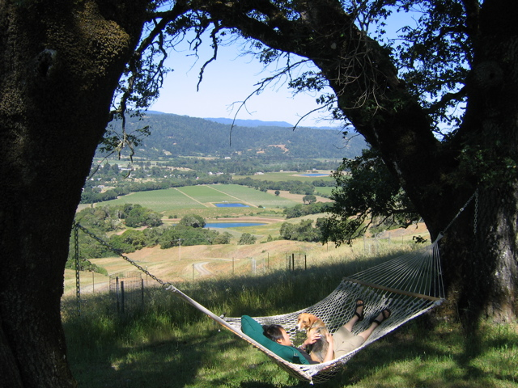

Up Next-->

The Other Place
is an Anderson Valley ranch with cottages where dogs are welcome. Huxley had an acre of front yard and could hike off leash anywhere. He also got a lot of rest, some when we were off at the Pinot Festival and some when we were home.
The view looks northwest down the valley, over the vineyards around Boonville.